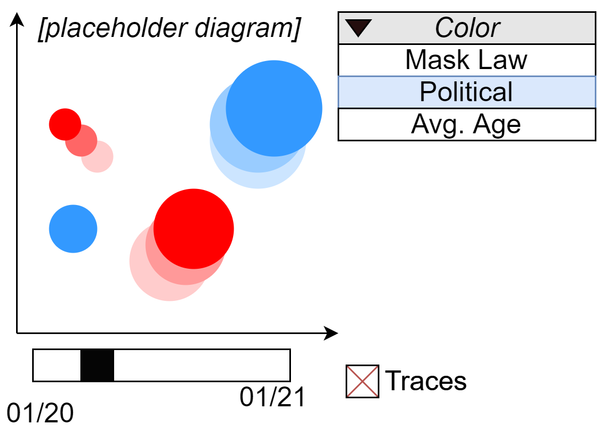
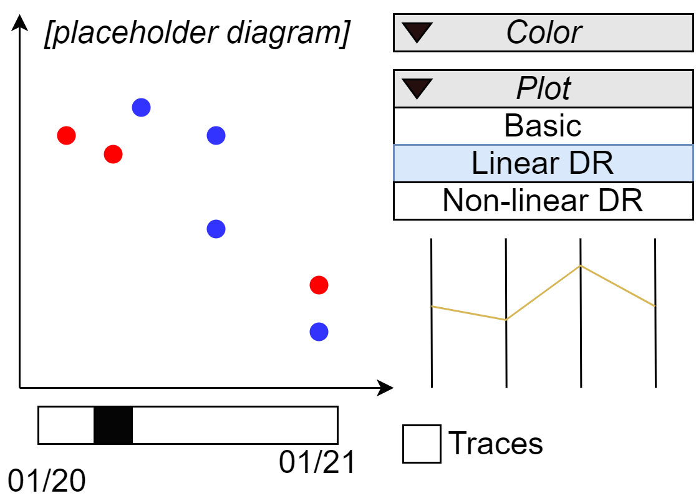

Real-Time Visualization of Multivariate Data for Epidemiology
Exploring the potential of visualizing complex, multivariate epidemiogical data in real-time.
Introduction
Our world is changing, and the health landscape is changing with it. Society is more interconnected than ever before, allowing communicable diseases to spread rapidly across the globe . Furthermore, population demographies are shifting, dietary habits are changing, and healthcare is evolving, to name but a few fluctuating factors which influence the prevalence of non-communicable dieseases. To keep up with this ever-changing world, epidemiologists are analysing larger and more varied data sources . This analysis is facilitated by better data collection, storage, and sharing technologies . For example, the emergence of electronic healthcare records has revolutionized public health surveillance by reducing the effort required to collect, transfer, and aggregate health data . A notable consequence of this is a reduced time between data collection and data analysis. This allows epidemiologists to infer relevant health trends in less time than ever before, an advantage which is especially important during emergency heath events (such as an epidemic).
Another important trend is the push for open data. Increasingly, researchers are encouraged (or required) to publish their data alongside their studies . Additionally, governments and other organizations are creating robust open data initiatives, which collect, store, and publish data for others to use . In the ideal case, these initiatives provide data through public APIs (application programming interfaces), which allow software to automatically retrieve data in a machine-readable format. This eliminates the need for researchers to manually download data sets. This accomplishes two things: researchers have a greater guarantee that they are working with up-to-date data, and time is freed up to perform analysis. Both are very important in real-time analytics, where analysis must be performed quickly to guide timely decision making .
The exact definition of ‘real-time’ varies among sources, but in analytics it generally refers to a minimal delay between when data is received and when it is analyzed . Data arrives in the system soon after it is available. The speed at which this occurs depends on the data source; it could be very slow (e.g. every month) or very fast (e.g. every few milliseconds) . In most epidemiological contexts, data sources tend towards the slower side (e.g. epidemic disease statistics updated daily ), but there are exceptions (e.g. live sensor monitoring, where data updates may occur on the order of seconds ).
Visualization is a valuable tool in real-time epidemiological analysis because it provides a quick overview of data, especially important when time is limited or when the data is large and complex. There are several issues which arise when visualizing real-time, multivariate data. This report will cover these issues and suggest ways in which they can be mitigated.
Visualization
Visualization has been a core tenet of epidemiology since its inception. In fact, the creation of modern epidemiology is often attributed to when John Snow used a map of cholera cases to infer how the disease was spread . Since then, epidemiologists have used a wide variety of visualization methods to further their understanding of both communicable and non-communicable diseases . Visualization is very useful when one wishes to gain a quick understanding of data, which can then inspire further analysis. This is important for real-time analytics, wherein analysts need to infer relevant patterns in data as soon as they can in order to make sensible decisions under time pressure. For example, public health officials often track multiple visual displays (time-series plots, disease case maps) to identify potentially actionable public health concerns . If a concern is identified, an in-depth study (e.g. a cross-sectional study) may be undertaken to evaluate it further. This study too will likely involve visualization techniques to help the researchers better understand their results and convey them to others .
All data visualizations consist of a mapping from the data to a limited number of visual elements, such as position, shape, and color. Different mappings will emphasize different parts of the data’s structure. In real-time visualization, the visual elements update every time new data is received. An important factor to consider is how exactly the elements will be updated. In general, the aim is to maximize the information conveyed by the update whilst preserving the user’s ‘mental map’ of the data . If a substantial update to the data makes little difference to the visualization, then the user will not gain much additional understanding of how the data is evolving. Conversely, if a small update to the data makes a substantial difference to the visualization, then the user will struggle to keep track of trends.
This raises a broader point about the importance of facilitating temporal comparisons in real-time visualization. If the goal is to identify changes in the data over time, then the user must have some mechanism to compare the current state to past states. Dasgupta et al. identify four categories of method used to achieve this: juxtaposition, integration, superimposition, and animation .
In juxtaposition, a separate instance of the visualization is used to represent different point in time; this is useful when the diagram must be static (e.g. in a traditional research paper) but is uncommon in software.
In integration, an axis is used to explicitly represent the passage of time. The most common example of integration is the time-series plot, a staple of all analytic fields (including epidemiology). Integration is a very intuitive way to represent time-dependent data but can be a poor choice when the data is multivariate. Figure 1 shows two of the main issues: visual clutter and problems representing data from different scales.
In superimposition, visualizations of the data at different time points are superimposed on top of each other. This removes the need for a time-axis, freeing up a positional axis to represent something else. Time can be conveyed through other visual elements (e.g. color), as is the case for trace plots (enable 'traces' in Figure 2 or Figure 3 for an example).
In animation, the diagram is divided into frames. Only one frame is visible at a time. Each frame is a representation of the data at a specific point in time. Progressing through subsequent frames will show a shifting set of visual elements, hopefully conveying temporal relationships to the viewer. This is not to be confused with the use of artificial transition animations to help preserve a user’s mental map between real animation frames (e.g. as used in ). Animation is most effective when accompanied by an interactive scrubber which allows the user to select specific frames and playback parts of the animation as they chose (see Figures 2 and 3 for an example of this). This allows the user to explore trends as they see fit, which is useful but can require substantial active effort. A pure-animation approach may also be taxing on a user’s memory as they can only simultaneously see the state of the data at a single time-point. To combat this, it can be useful to combine it with integration or superimposition (see Figure 2 or Figure 3).
Multivariate Data
To keep up with the evolving health landscape, epidemiologists are using larger, higher-dimensional data in their analysis . Due to rapid progress in -omics technology (e.g. genomics, proteomics), the collection and use of high-dimensional -omics data in epidemiology is becoming more common . Furthermore, increasing availability of high-quality epidemiological and non-epidemiological (or ‘background’) data, alongside greater processing power, means that epidemiologists are incorporating more varied data in their analysis . For example, in outbreak analytics, there is a push towards using as much potentially relevant information as possible when tracking the spread of disease . Complex data requires more effort to analyze, a problem which can be mitigated using real-time visualization techniques. However, visualization of real-time, multivariate data is challenging. Incoming data can be of different natures (quantitative, categorical, etc.), arrive at different periods, be of varying quality, and so on .
Often, the traditional visualization methods used by epidemiologists are unsuitable for complex, multivariate data . A key problem is the limited number of visual elements which are available to represent the variables. Position is generally considered to be the most interpretable visual element (at least for quantitative variables), but diagrams are limited to two or three positional axes . More variables can be represented using secondary (or optical) visual elements such as color and shape.

Figure 2: [Time-series plot of COVID-19 incidence by state. Will include hover + click highlighting]
In Figure 2, three variables are plotted. The x and y axes represent COVID-19 incidence and heart disease mortality respectively; a point represents a US state with its size proportional to the population of the state and its color represents the variable selected in the drop-down menu. This is an example of a ‘bubble chart’, popular in public health and a good example of how more than two variables can be plotted on a two-dimensional diagram . However, issues begin to arise when the number of variables is greater than three or four, or when visual elements are reserved to represent time or space. Space in particular is a problem due to its common presence in epidemiological data .
When free visual elements are limited, it is difficult to compare even a small number of variables. One way to address this is by allowing the user to select which variables they wish to view; then by flicking between them they can try and elicit possible relationships (See Figure 3 with 'basic' selected). This requires constant effort from the user, and places a lot of strain on their memory, problems which are exacerbated in a real-time analysis context. Another way of handling is by encoding the high-dimensional data into a smaller number of dimensions, while retaining as much relevant information as possible. This is dimensionality reduction, a technique which has seen increased interest for visualization over the past few years .
Dimensionality Reduction
Dimensionality reduction is a process in which n-dimensional data is encoded in m dimensions, where m < n. The goal is to retain certain elements of the data’s underlying structure after encoding, even though information is necessarily lost. Because dimensionality reduction has a broad range of uses (including data visualization), a variety of different methods exist . These methods can be broadly categorized as linear or non-linear . Linear methods, such as the very popular Principal Component Analysis (PCA), use a linear transformation to project data onto fewer dimensions. The simplicity of linear methods makes them useful for producing an easily interpretable encoding . However, the relationship between an n-dimensional dataset and its most useful m-dimensional encoding may not be linear, and in this case a linear method may not be the best approach. Fortunately, many non-linear dimensionality reduction methods have been proposed, especially in recent years . There is substantial variety in these methods, with many aiming to preserve different features of the data. Notable examples include self-organizing maps (SOMs), non-linear auto-encoders, t-SNE, UMAP, and many more . Non-linear methods are generally better at preserving local structure in the data, whereas linear methods are better at preserving global structure .
A key concern of dimensionality reduction for visualization is the interpretability of the encoding; the resulting visualization should convey relevant information to the user . Take PCA for example, each dimension has a simple interpretation as a linear combination of the original features. If a user knows the make-up of the dimensions, they can get a feel for the high dimensional quantity of a point from its projected 2-dimensional position alone (see Figure 3 with 'PCA' selected). This is generally not possible with a more complex, non-linear method such as an autoencoder . However, an understanding of individual points may not be necessary; the user may only wish to get a feel for how the different points relate to each other (e.g. by analyzing nearby points and identifying clusters) . It is here where non-linear methods may be of most use, but one be cognizant of a chosen method’s strengths and weaknesses to avoid being misled . This problem is especially prevalent in parametric methods wherein a poor choice for the parameter value(s) may reveal false structures .

Figure 3: [Time-series plot of COVID-19 incidence by state. Will include hover + click highlighting]
Dimensionality reduction for real-time data comes with several difficulties. For one, many popular dimensionality reduction methods are computationally intensive (e.g. PCA, t-SNE), and can therefore struggle to keep up with a lot of data coming in . Furthermore, a lot of methods are very sensitive to small changes in the data, which makes it difficult for a user to preserve their mental map of the visualization . Several ‘incremental’ dimensionality reduction methods have been proposed to address these issues, including incremental versions of PCA , graph layout , and local linear embedding . This is an emerging field, the success of which is crucial to the feasibility of dimensionality reduction in real-time visualization .
Visual Analytics
Incorporating interactivity in visualization is an effective way to covey complex information. This is visual analytics, a field which has seen increased interest over the past decade, both among researchers (including epidemiologists and public health experts) and the public . Interactivity allows a user to control what they see in a visualization, meaning that a lot of information can be included in a single diagram. This is especially useful for exploratory analysis: an analyst can identify potential patterns from an overview of the data and investigate them further by emphasizing certain visual elements, hiding others, or incorporating visual aids (e.g. custom colors, labels) .
Visual analytics is a useful way to mitigate some of the challenges present in real-time, multivariate data analysis . As discussed, an animation control allows users to explore temporal data without reserving too many visual elements to represent time. Furthermore, interactive elements can help a user analyze multivariate data by allowing them to select which variables they wish to visualize (see Figure 3 with 'Basic' selected). If dimensionality reduction is applied, then interactivity can be used to help the user interpret the resulting visualization ; an example of this is given in Figure 3 (with 'PCA' or 'Autoencoder' selected).
Interactivity is present in almost all epidemiological visualization software, but explicit incorporation of visual analytics research has been limited . However, we suspect that the recent attention visual analytics has seen in epidemiology will lead to rapid progress in the near future.
Future
Despite interest in advanced, novel data visualization methods, epidemiologists tend to rely on simple, familiar methods in practice . Popular software, such as Epi Info and ESSENCE, primarily use basic diagrams (e.g. time-series graphs, bar charts) to represent data . A few of the techniques discussed in this report are present in such software; Epi Info for example uses interactive animation to convey time-dependent data and allows users to control data stratification to explore multivariate data . However, support for true real-time data visualization is often scarce, and dimensionality reduction techniques are often absent. This contrasts to research, where a variety of advanced, real-time, multivariate data visualization solutions are described . This reveals two things: there is a substantial interest in such solutions, and there is a barrier in translating them into epidemiological practice.
There are several factors which discourage adoption of complex, novel solutions. Because epidemiologists make decisions which affect people’s heath, they require a great deal of trust in their methods. This naturally results in a bias towards familiar methods or methods which are easy to interpret . Advanced techniques (such as dimensionality reduction) tend to introduce a larger distance between the data and the visualization, thus requiring more cognitive effort to understand and trust. Effective training, including the incorporation of training into the software itself (e.g. guided visual analytics), will be a necessity to overcome this issue in the future .
Another factor is a disconnect between users and developers resulting in software which researchers believe epidemiologists will want, but ultimately has little utility in practice. This arises from a lack of understanding of the domain, and a lack of continued user-evaluation studies . Long-term user evaluation is especially uncommon, and as a result novel software is often abandoned soon after it is released . The best solution is to keep users in the loop throughout the software’s development cycle and long after its initial proposal.
Another factor which discourages adoption is if the software does not fit well into existing workflows . This can be addressed by ensuring the tool is compatible with common data formats and is interoperable with existing tools (if possible). This is a subset of a wider issue: effort of adoption. If software requires a lot of effort to adopt then it is less likely to be widely adopted. Building the tool on familiar tools (e.g. as a package for R) is an effective way to reduce this effort. Another solution is to implement the tool as a web application. Web browsers are ubiquitous across a range of devices and the web is becoming an increasingly viable platform to build scientific software . This approach is becoming very common; for example, a lot of tools for visualizing disease incidence and mortality are available on the web .
In summary, in epidemiology there is an unmet need for software which can effectively visualize multivariate, real-time data. Any software hoping to meet this need will have to consider how to work with disparate sources of data, how to convey temporal relationships, how to represent complex data with a limited set of visual elements, and more. Ideas from visual analytics and iterative dimensionality reduction are likely to be informative. Several software proposals indicate an interest in these ideas, but none of the proposals have seen widespread adoption in epidemiological practice thus far. A more focused effort should be taken to ensure novel software meets the actual needs of the user, and is easy to install, integrate, and use. If achieved, we predict that such a software could be revolutionary for epidemiology, allowing the field to take greater advantage of the developing data landscape.